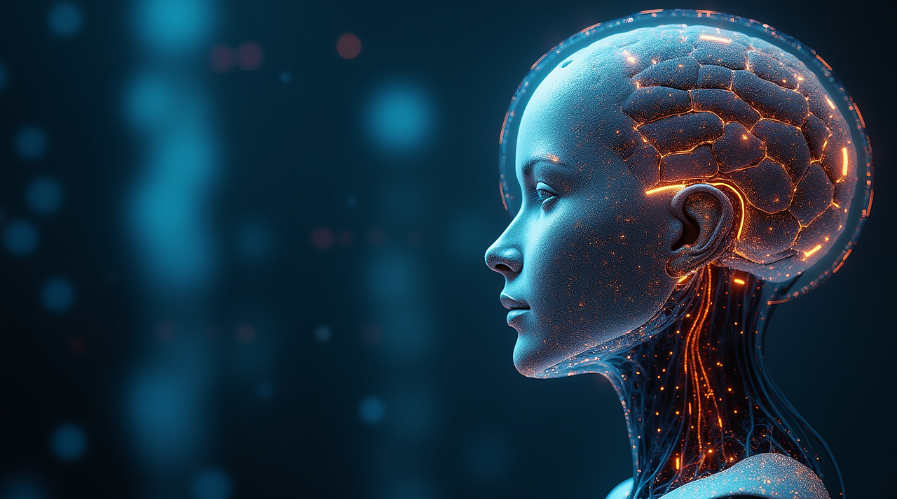
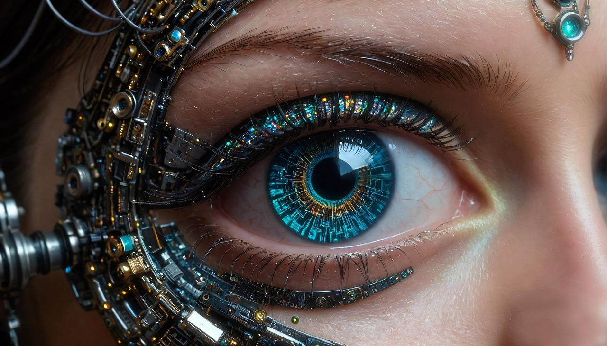

A brief collection of major milestones now and future implications
| Current Event | Current Event | Current Event | Future Outlook | Future Outlook |
|---|---|---|---|---|
| Neural Speech Restoration | AI-Driven Prosthetics | Consumer AR Lenses | Neural Co-Processors | Synthetic Senses |
| Implants translating brain signals into real-time speech, restoring communication for individuals with paralysis. | Prosthetics enhanced with adaptive AI, imrpving precision, balance, and real-time user responsiveness. | Augmented reality lenses offering HUD-style overlays, biometics, navigation, and real-time environmental data. | Brain-machine co-processors designed to support memory, focus, planning, and cognitive processing. | Augementations enabling new sensory abilities such as infared perception, enhanced hearing, or magnetic field detection. |
|
 |
|
 |
IMG | IMG |
Cybernetics are rapidly evolving, offering new ways to enhance human capabilities, restore lost function, and improve quality of life. From communication and mobility to sensory expansion, these technologies continue to redefine what is possible - opening doors to a future where human limitations can be overcome through innovation.